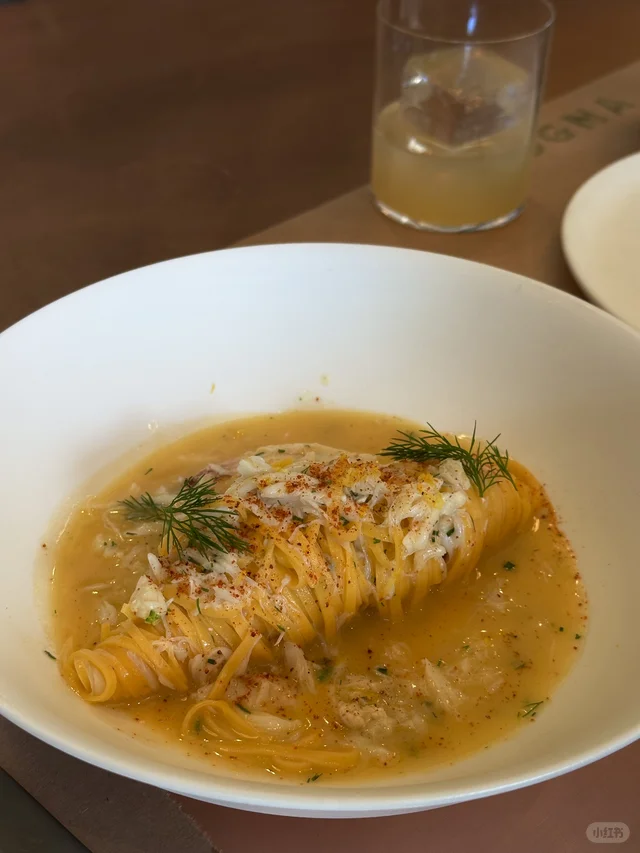
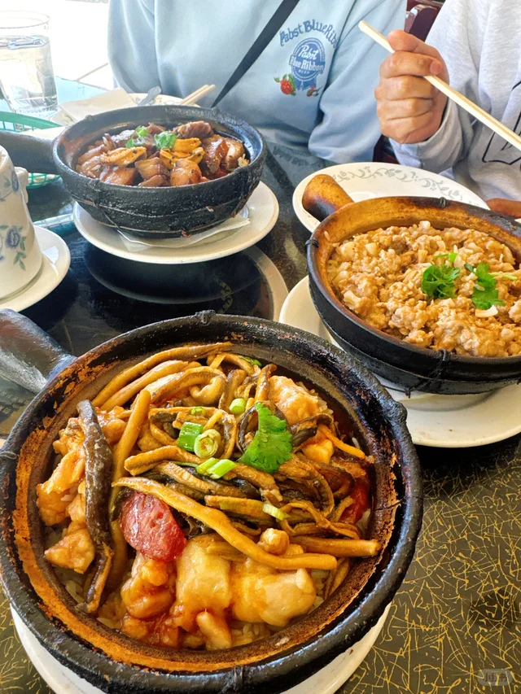
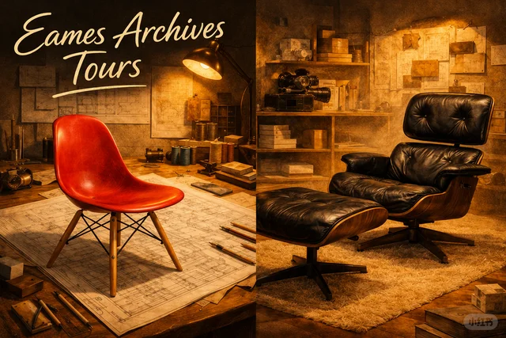
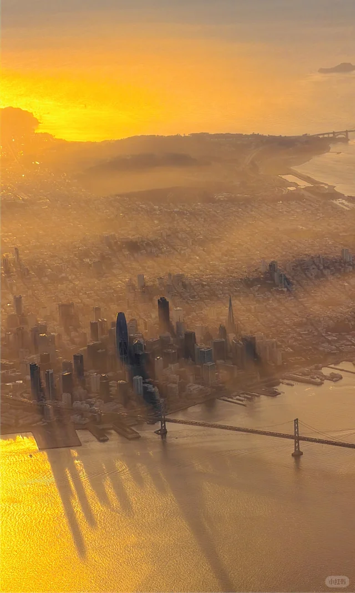

🎉活动与演出

「🍎本周长周末湾区精彩活动5/21-5/25」
本周末就用得上，长周末活动一网打尽，先码后看绝对不亏。

「湾区5/22-5/25长周末活动| 嘉年华+夜市+市集+博物馆」
嘉年华、夜市、市集、博物馆全打包，免费低价适合带家人朋友一起去。

「5月的湾区太好逛了🔥码住这篇！」
5月湾区活动太丰富，这篇懒人合集帮你一次性整理好。

「断更两个月，只因湾区近期线下活动太丰富😍」
博主都因为活动太多断更，可见近期湾区线下有多热闹。
「五月上半月湾区演出信息」
想看演出的朋友必收，南湾半岛中英文剧目都覆盖。
🍜美食探店

「湾区｜开车一小时也要去吃的贵州烧椒鸡！好吃」
能让人开车一小时去吃的店，必有它的过人之处，重口味爱好者别错过。

「旧金山 $98 tasting menu 无敌好吃 😄」
$98的tasting menu在SF算性价比之选，约会或周末犒劳自己都合适。
「做饭博主今年在湾区吃到的好店合集🔢」
做饭博主认证的好店合集，挑剔的味蕾说好那基本不会踩雷。

「SF最新韩式tapas小店」
新开的韩式tapas小店，想换新口味的可以来打卡。

「San Jose大统华超市将于06/18开张！」
T&T加州首店即将开张，亚洲超市爱好者请准备好钱包。
🌲户外自然

「湾区限定｜Mulberry U Pick」
桑葚季限定体验，自己采摘的乐趣是城市里少有的浪漫。

「湾区周边❗冷门Getaway 8天Day Trip打卡地」
8个冷门Day Trip地点，避开人潮的小众路线最适合周末逃离。

「旧金山 Land's End 陆地尽头」
Land's End的海岸线和落日是SF最治愈的角落之一。

「SF湾区走过最棒的trail！走完爱上了SF!」
博主认证最棒的trail，能让人重新爱上湾区的那种。

「加州隐藏宝藏 🌲Portola Valley自驾」
半岛山间的Portola Valley，自驾路线安静又出片。
🎨艺术与文化

「湾区生活 | SF莫奈画展」
莫奈画展正在SF展出，喜欢印象派的朋友千万别错过。

「盐田千春🎃也来湾区办展了！」
盐田千春的红线装置艺术终于来湾区，时隔7年再相见。

「Beeple新展在湾区Palo Alto开幕🥂」
数字艺术大佬Beeple在Palo Alto的新展，科技与艺术的交汇点。

「湾区 | SF Decorator Showcase 年度展又来了」
家居设计爱好者的年度盛事，看顶级设计师如何改造老宅。

「湾区宝藏免费艺术馆｜斯坦福cantor艺术馆」
免费的Cantor艺术馆是半岛的宝藏，逛完还能在斯坦福校园散步。
💎宝藏地点

「湾区周末｜Jackson Square是sf最美街区吧」
Jackson Square被称为SF最美街区，红砖小楼很有欧洲味。

「三番周末逛街🌟Fillmore Street真宝藏呀！」
Fillmore Street的小店密集又有品味，周末闲逛绝佳路线。

「湾区茶室，适合找个雨后点一壶茶，读一本书」
雨后的茶室+一本书，这种小确幸在湾区其实并不常有。

「湾区桃花源记——Djerassi艺术徒步」
Djerassi艺术徒步把户外和雕塑结合，是半岛的小众桃花源。

「旧金山市区里的森林秘境」
市中心居然藏着森林秘境，城市探索控不可错过。